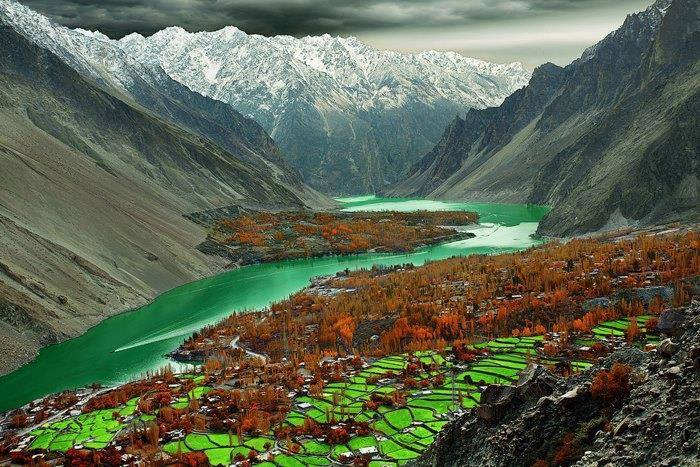

<div class="portfolio-single-load clearfix">
    <div class="custom-full-width-box">
        <div class="custom-container">
            <div class="custom-row align-items-center">
                <div class="custom-image-column">
                    
                </div>
                <div class="custom-text-column">
                    <h2 class="custom-heading">Karimabad Bazaar</h2>
                    <p class="custom-paragraph">
                        Karimabad Bazaar, located in the heart of Hunza Valley, is a vibrant marketplace bustling with activity and color. Visitors can explore its narrow alleyways, browse stalls selling traditional handicrafts, and sample delicious local cuisine. The bazaar offers a unique opportunity to interact with friendly locals, learn about their customs and traditions, and immerse oneself in the rich cultural tapestry of Gilgit-Baltistan. From intricately embroidered textiles to handcrafted souvenirs, Karimabad Bazaar delights visitors with its authentic charm and vibrant atmosphere.
                    </p>
                </div>
            </div>
        </div>
    </div><!-- .custom-full-width-box end -->

</div><!-- end single-project -->
